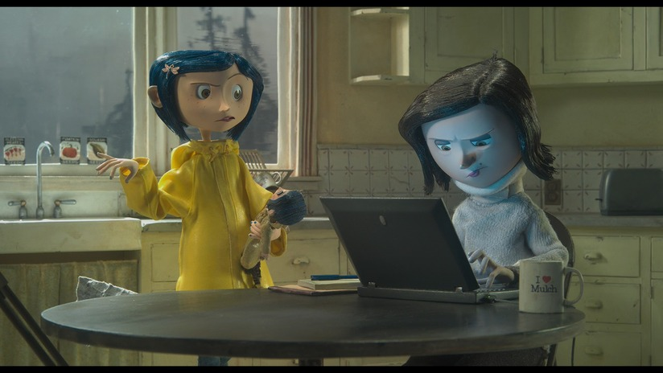
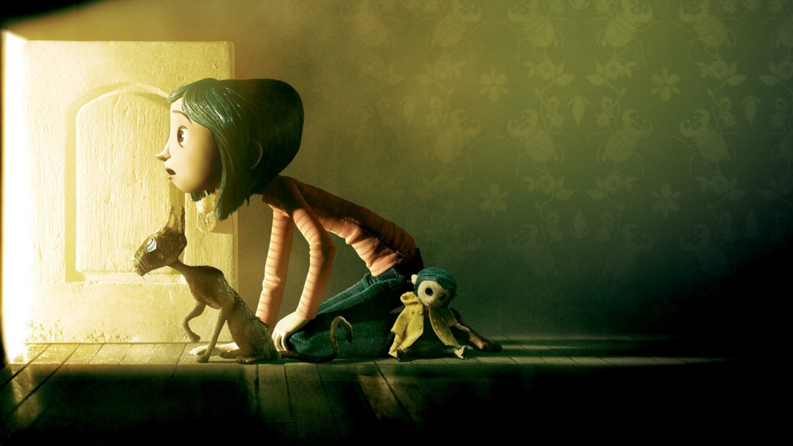
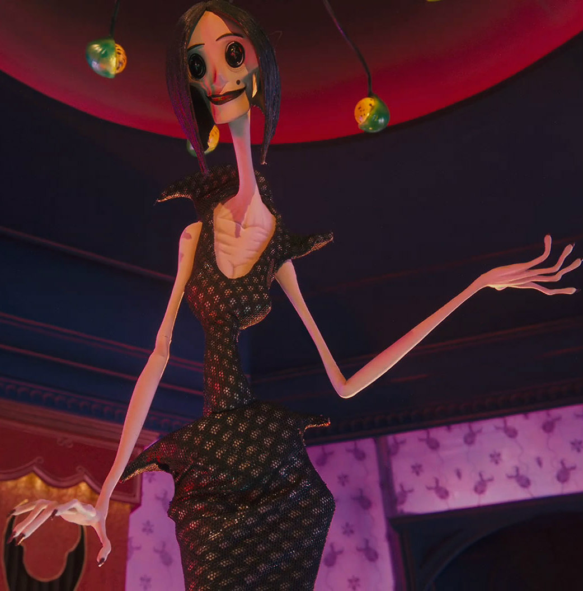

About Coraline
Fiesty little girl with stunning blue hair. This is no ordinary girl. Curious, intelligent and brave without question. She is the doll that was used in the movie Coraline Jones. Its a stop motion movie. In simple words, its alot of pictures run together to make it look like a movie.
A few shots from the movie
coraline and her mother
Discovering the little door to the other world
The other mother
Coraline's friends
- Wyborne
- The black cat
- Mr Bobinski
- Miss Spink and Miss Forcible
- Tall ghost girl
For more information about this movie, click Fandom